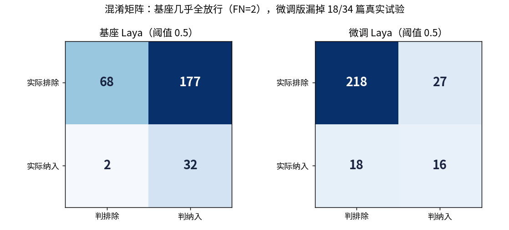
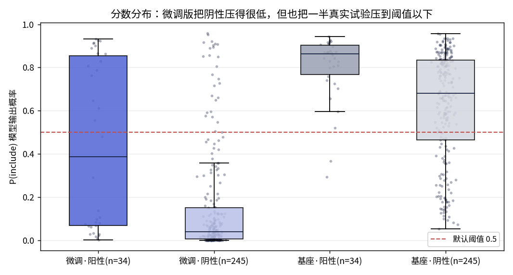
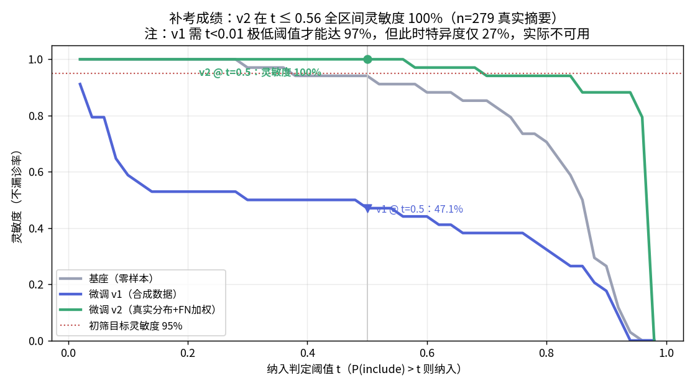
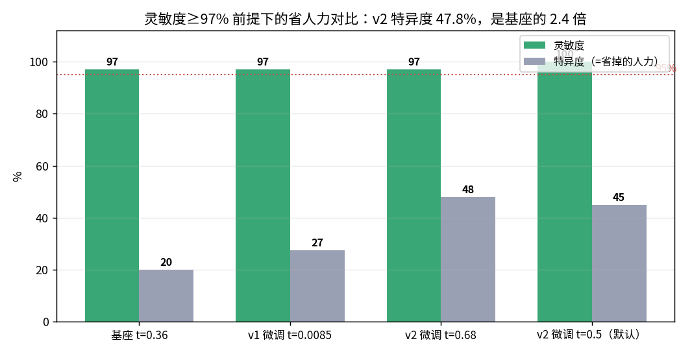

cover
上一次，我们讲了一个顺风顺水的故事：把 0.4B 的小模型 Laya 用 Rust 重写、微调 27 分钟，替人筛系统综述文献——40 篇测试摘要，纳入判定准确率 97.5%，边界案例满分。
故事很好听。但有一个问题我们一直没说：
那 40 篇考题，是我们自己出的。
做过系统综述的人都知道，初筛这条流水线要是漏掉一篇合格文献，整个 Meta 分析的结论可能就站不住。所以"筛得准不准"这件事，不能拿自己编的模拟题证明。
真正的考验长这样：找一篇已经发表的高质量综述，人家专家团队当年手工筛过一遍——检索回来多少篇、最后纳入哪几篇，全部白纸黑字。把同样的文献喂给 AI，看它的答案和专家对不对得上。
我们选了 Umpierre 2011 年发在 JAMA 上的那篇：2 型糖尿病患者做结构化运动对糖化血红蛋白的影响，47 项随机对照试验入选。它的纳入标准和我们的 AI 筛选语句几乎逐字一样，简直是为我们准备的标准答案。
我们复建了它当年的 PubMed 检索式，捞回 1975 篇真实文献；从综述的参考文献里解析出能确认身份的 34 项纳入试验作为"阳性金标准"，再从池子里随机抽 245 篇没入选的作为阴性。34 对 245，真实战场就是这样——合格的永远是少数。
结果出来的那一刻，办公室里很安静。
| 模拟考（合成题） | 高考（真实文献） | |
|---|---|---|
| 微调版灵敏度（不漏诊率） | 100% | 47.1% |
| 漏掉的真实试验 | 0 / 12 | 18 / 34 |

混淆矩阵
▲ 左：基座模型几乎全放行（只漏 2 篇，但多看 177 篇垃圾）。右：微调版敢拒绝了，却把 18 篇真正合格的试验也拒之门外。
47.1% 的灵敏度是什么概念？如果医学生真拿它筛文献，每两篇合格研究就丢一篇——综述直接报废。而这个风险，在合成测试集上完全看不见。
说句公道话：这不是推理引擎的锅。同一台机器、同一份权重、Rust 服务连续 61 分钟 558 次推理零故障——挂的是"教学大纲"，不是"考场设备"。
挂科之后我们做的第一件事，是把每个模型给每篇文献打的分数全部画出来。

分数分布
▲ 微调把阴性文献的分数从 0.68 压到 0.04——压得很漂亮。但它同时把阳性的中位分从 0.87 拉到了 0.48。默认的判定线是 0.5，正好切在阳性分布的正中间。
再看排序能力（ROC 曲线下面积）：基座 0.736，微调 0.741——一模一样。
所以真相是：微调没有破坏模型的判断力，破坏的是概率尺度的位置。就像体重秤没坏，但零点漂移了——所有读数整体偏低，而你还按原来的刻度线判肥胖。
为什么会漂？因为我们的训练数据是程序生成的"标准范文"：措辞规整、结构统一。微调学到的是"识别范文"，遇到真实文献里那些 90 年代风格的老摘要、写"lifestyle"不写"exercise"的措辞、摘要里压根不报 HbA1c 数值的试验，它就信心全无地打低分。
三个修法，全部对着病根：
训完一看校准参数就笑了：noul 头的温度被自动标到了 4.0——模型自己把过紧的打分尺度狠狠松了一把。病因诊断无误。
同一份考卷，34 篇阳性 + 245 篇阴性，原封不动再考一次：

补考成绩
| v1（合成训练） | v2（真实分布训练） | |
|---|---|---|
| 灵敏度 | 47.1% | 100%（一篇不漏） |
| 排序能力 AUC | 0.741 | 0.810 |
| 研究设计分类 | 28/34 | 34/34 |

省人力对比
▲ 更实际的看法：大家都达到 97% 灵敏度时，基座只能帮你省 20% 的阅读量，v2 能省 47.8%——2.4 倍。换句话说，现在它可以放心地把检索池砍掉一半，且不漏任何一篇真实试验。
从"挂科"到"一篇不漏"，中间隔的不是什么神秘技巧，就是三样笨功夫：真实数据、正确的奖惩方向、在真卷子上调分。
第一，合成数据能验证管线，验证不了能力。 它能证明"代码没写错"，证明不了"模型真学会了"。这两件事之间隔着整个分布偏移。
第二，准确率是最会说谎的指标。 87.8% 都是阴性的真实场景里，"全部拒绝"都有 87.8% 准确率。筛选类任务，灵敏度才是命。
第三，挂科要趁早。 这次最值钱的不是补考通过，而是失败发生在部署之前——发生在我们的测试机上，而不是医学生的开题报告里。
工程上，这就是 pagoda 这套 Rust 流水线存在的意义：基座、v1、v2 三个模型实例并排挂在 31180/31181/31182 端口，同一批考题并行打分，阈值扫描一条命令出全套曲线。发现问题靠流程，不靠运气。
pagoda 是 SGLang 架构思想的 Rust 重实现，零依赖单文件部署。验证方案、测试报告（含全部图表与置信区间）、可复现脚本均已开源：github.com/quantz8a/pagoda，docs/validation 目录。所有金标准来自公开文献（Umpierre et al., JAMA 2011, PMID 21540423），谨向原综述作者团队的手工筛选工作致敬。